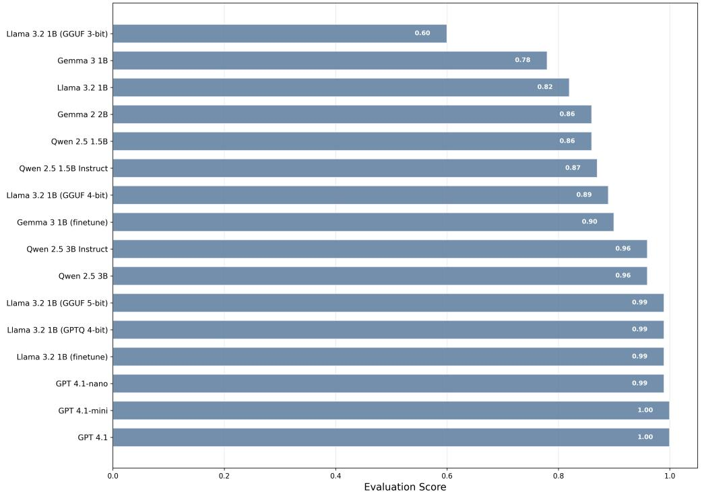

📚 每日论文简报
2025-11-01
为您精选了 6 篇高质量 AI 论文
🔍 宏观核心主题
核心研究主题
- 人工智能在远程工作和安全管理中的应用正面临新的挑战，研究者们正在探索有效的解决方案以确保负责任的AI评估。
- 跨平台计算代理的开发正在提升代理在多种环境中的通用性和交互能力，推动了智能代理技术的进步。
- 检索增强生成（RAG）技术在动态环境中的应用正在被深入研究，特别是在多模态交互和在线游戏领域的基准与评估方法。
- 3D生成技术的研究集中于生成高质量场景和部件的不同方法，面临着多样化的应用与挑战。
- 大型语言模型在医疗领域的应用正在快速发展，尤其是在电子健康记录分析和自我进化能力的提升方面。
技术趋势
- 强化学习与监督学习的结合正在成为提升大型语言模型在复杂推理任务中表现的重要方法，尤其是在多步推理和奖励机制优化方面。
- 多模态模型的能力正在不断增强，使其在推理、生成和理解视觉与语言数据中展现出更高的效率与准确性。
- 生成模型在生物分子设计中的应用正在扩展，特别是在酶和生物分子相互作用的控制与优化方面，显示出广阔的前景。
📊 中观聚类分析
主题 1: 这组论文探讨了人工智能在远程工作、代理安全、授权管理和负责任AI评估等方面的挑战与解决方案。
-
Remote Labor Index: Measuring AI Automation of Remote Work
提出了远程劳动指数（RLI），用于衡量AI在远程工作中的经济价值和自动化程度。 -
The Oversight Game: Learning to Cooperatively Balance an AI Agent's Safety and Autonomy
研究了一种最小控制接口，以在不修改系统的情况下实现AI代理的安全性与自主性的平衡。 -
Delegated Authorization for Agents Constrained to Semantic Task-to-Scope Matching
提出了一种新的授权方法，以确保大型语言模型驱动的代理在动态调用工具时遵循语义任务范围匹配，从而降低风险。 -
The Quest for Reliable Metrics of Responsible AI
探讨了负责任AI的评估指标的稳健性和可靠性，强调在AI开发中遵循负责任原则的重要性。
主题 2: 这组论文探讨了跨平台计算代理的开发，旨在提升代理在不同环境中的通用性和交互能力。
-
Surfer 2: The Next Generation of Cross-Platform Computer Use Agents
提出了一种基于视觉观察的统一架构，克服了以往系统在跨平台部署中的局限性。 -
Can Agent Conquer Web? Exploring the Frontiers of ChatGPT Atlas Agent in Web Games
展示了ChatGPT Atlas在网页交互中的新能力，包括分析网页、处理用户意图和直接执行浏览器中的输入。
主题 3: 这组论文探讨了在动态环境中应用检索增强生成（RAG）技术的基准和评估方法，特别是在多模态交互和在线游戏领域。
-
CRAG-MM: Multi-modal Multi-turn Comprehensive RAG Benchmark
提出了一个多模态多轮综合RAG基准，以支持智能设备用户在其视野中获取信息的能力。 -
ChronoPlay: A Framework for Modeling Dual Dynamics and Authenticity in Game RAG Benchmarks
开发了一个框架以建模游戏中的双重动态和真实性，为在线游戏领域的RAG基准提供了标准化评估的基础。
主题 4: 这组论文集中于3D生成技术，探讨了不同方法在生成高质量3D场景和部件方面的应用与挑战。
-
FullPart: Generating each 3D Part at Full Resolution
提出了一种新的部件生成方法，能够在全分辨率下生成3D部件，解决了以往方法在几何细节上的不足。 -
OmniX: From Unified Panoramic Generation and Perception to Graphics-Ready 3D Scenes
通过全景基础的2D提升技术，推动了3D场景的生成，利用强大的2D生成先验创建沉浸式和多样化的3D环境。
主题 5: 这组论文探讨了代码智能领域的最新进展，特别是在代码理解和视觉编程接口方面的应用。
-
Gistify! Codebase-Level Understanding via Runtime Execution
提出了Gistify任务，要求编码LLM创建一个最小的自包含文件，以重现特定代码库的功能，推动了代码库级评估的自动化设计。 -
JanusCoder: Towards a Foundational Visual-Programmatic Interface for Code Intelligence
探讨了神经代码智能如何扩展到程序生成的视觉输出，强调了其在灵活内容生成和程序驱动可视化编辑中的重要性。
主题 6: 这组论文探讨了深度学习模型在序列建模中的记忆机制及其解码过程的改进，旨在提升语言模型的效率和准确性。
-
Deep sequence models tend to memorize geometrically; it is unclear why
该论文提出了一种几何视角来分析序列模型的记忆存储方式，挑战了传统的关联记忆观念。 -
The End of Manual Decoding: Towards Truly End-to-End Language Models
该论文介绍了AutoDeco架构，旨在实现真正的端到端生成，消除手动调优解码过程的需要。
主题 7: 这组论文集中于大型语言模型在医疗领域的应用，特别是在电子健康记录分析和自我进化能力的提升。
-
Evontree: Ontology Rule-Guided Self-Evolution of Large Language Models
提出了一种基于本体规则的自我进化方法，以提高大型语言模型在数据敏感领域的适应能力。 -
EHR-R1: A Reasoning-Enhanced Foundational Language Model for Electronic Health Record Analysis
开发了一种增强推理能力的基础语言模型，旨在改善电子健康记录的自动化分析以支持临床决策。
主题 8: 这组论文集中探讨了生成模型在视频和运动生成领域的挑战与进展，特别关注模型的泛化能力和生成效率。
-
The Quest for Generalizable Motion Generation: Data, Model, and Evaluation
提出了针对3D人类运动生成模型泛化能力的深入分析，并与视频生成领域的进展进行了对比。 -
Generative View Stitching
探讨了自回归视频扩散模型在未来条件指导下的局限性，并提出了相机引导视频生成的新方法。 -
MC-SJD : Maximal Coupling Speculative Jacobi Decoding for Autoregressive Visual Generation Acceleration
提出了一种新的解码方法，以加速自回归视觉生成模型的推理速度，显著减少生成单个样本所需的步骤。
主题 9: 这些论文集中探讨了多模态模型在推理、生成和理解视觉与语言数据中的能力及其应用。
-
Are Video Models Ready as Zero-Shot Reasoners? An Empirical Study with the MME-CoF Benchmark
本研究通过MME-CoF基准测试评估视频生成模型在零-shot推理中的能力，探讨其潜在的视觉感知和建模行为。 -
Unveiling Intrinsic Text Bias in Multimodal Large Language Models through Attention Key-Space Analysis
揭示了多模态大型语言模型在处理视觉-语言数据时的内在文本偏见，并分析了其对推理能力的影响。 -
CityRiSE: Reasoning Urban Socio-Economic Status in Vision-Language Models via Reinforcement Learning
提出了一种利用强化学习的方法，通过视觉-语言模型推理城市社会经济状态，促进可持续发展目标的实现。 -
MedVLSynther: Synthesizing High-Quality Visual Question Answering from Medical Documents with Generator-Verifier LMMs
介绍了MedVLSynther，一个生成-验证模型，能够从医学文档中合成高质量的视觉问答。 -
Emu3.5: Native Multimodal Models are World Learners
提出了Emu3.5，一个大规模的多模态世界模型，能够在视觉和语言之间进行状态预测。 -
Multimodal Spatial Reasoning in the Large Model Era: A Survey and Benchmarks
对大型多模态推理模型在空间推理任务中的表现进行了综述，并提供了基准测试。 -
PairUni: Pairwise Training for Unified Multimodal Language Models
提出了PairUni，一个统一框架，通过成对训练来平衡理解和生成任务，提升统一视觉-语言模型的性能。 -
SeeingEye: Agentic Information Flow Unlocks Multimodal Reasoning In Text-only LLMs
展示了如何通过代理信息流增强文本-only大型语言模型在多模态任务中的推理能力。 -
Video-Thinker: Sparking 'Thinking with Videos' via Reinforcement Learning
提出了Video-Thinker，通过强化学习扩展了图像推理方法到视频推理任务，推动了“用视频思考”的研究。
主题 10: 这组论文集中探讨了通过强化学习（RL）和监督学习（SFT）提升大型语言模型（LLMs）在多步推理任务中的能力，特别关注训练与推理之间的匹配问题和奖励机制的优化。
-
Defeating the Training-Inference Mismatch via FP16
提出了一种通过FP16来解决强化学习微调中训练与推理政策之间数值不匹配的问题，从而提高大型语言模型的稳定性。 -
Supervised Reinforcement Learning: From Expert Trajectories to Step-wise Reasoning
探讨了在小规模开源模型中，监督微调（SFT）和基于可验证奖励的强化学习（RLVR）在多步推理任务中的表现差异，并提出了改进策略。 -
FAPO: Flawed-Aware Policy Optimization for Efficient and Reliable Reasoning
引入了一种缺陷感知的策略优化方法（FAPO），通过探索推理轨迹和利用正确答案的回滚信号来增强大型语言模型的推理能力。 -
Reasoning-Aware GRPO using Process Mining
提出了一种基于过程挖掘的推理感知的群体相对策略优化（PM4GRPO），旨在改进当前以结果为中心的奖励机制，以支持多步推理。
主题 11: 这组论文集中探讨了大型语言模型在复杂推理任务中的表现与能力，尤其是在数学推理和工具使用方面的挑战与进展。
-
AMO-Bench: Large Language Models Still Struggle in High School Math Competitions
提出了AMO-Bench基准，专注于评估大型语言模型在高难度数学问题上的推理能力。 -
PORTool: Tool-Use LLM Training with Rewarded Tree
介绍了一种新的训练方法，通过奖励树来提升工具使用大型语言模型的多步推理能力。 -
Reasoning Language Model Inference Serving Unveiled: An Empirical Study
探讨了推理大型语言模型的服务性能和行为，为其在实际应用中的部署提供了实证研究。
主题 12: 这组论文集中于利用生成模型进行生物分子设计，特别是在酶和生物分子相互作用的控制与优化方面。
-
EnzyControl: Adding Functional and Substrate-Specific Control for Enzyme Backbone Generation
提出了一种新的方法，通过功能性和底物特异性控制来改进酶骨架的生成，解决了现有模型在绑定数据和灵活性方面的局限性。 -
ODesign: A World Model for Biomolecular Interaction Design
开发了一种通用模型，旨在优化生物分子相互作用的设计，克服了现有生成模型在分子类型特化和细粒度控制方面的不足。
📝 微观深度解读
推荐分数: 0.453
📖 简介：本文提出了一种新的评估框架ASU（Accuracy, Service-end, User-end）和基准套件ASU-Perf，旨在全面评估推理大语言模型（RLLM）的服务性能。研究揭示了RLLM与传统LLM在服务行为上的显著差异，并验证了多种优化技术对RLLM服务效率的影响，为实际部署提供了重要的指导和洞察。

推荐分数: 0.451
📖 简介：本文提出了AutoDeco架构，解决了大型语言模型在文本生成中对静态超参数手动调节的依赖问题。通过动态预测解码参数（如温度和top-p），AutoDeco实现了真正的“端到端”生成，显著提升了性能并展现出基于自然语言指令的解码控制能力。实验表明，该方法在多个基准上超越传统解码策略，且具备强大的泛化能力。

推荐分数: 0.450
📖 简介：本文提出了Flawed-Aware Policy Optimization (FAPO)方法，旨在解决大语言模型在强化学习中面临的“错误正例”问题。FAPO通过引入生成式奖励模型（GenRM）来检测推理过程中的缺陷，并对错误正例施加惩罚，从而在训练早期利用其优势，同时在后期引导模型向可靠推理转变。实验表明，FAPO显著提高了模型的推理可靠性和训练稳定性。

推荐分数: 0.437
📖 简介：本文提出了一种优化方法，利用量化低秩适应（QLoRA）对一亿参数的Llama 3.2模型进行微调，以实现多语言电子商务意图识别。通过合成数据集训练，该模型在准确性上达到99%，与大型模型GPT-4.1相当，同时显著降低了计算成本和内存使用，证明小型开源模型在特定领域的有效性和高效性。

查看详细解读 →
推荐分数: 0.421
📖 简介：本文提出了Evontree框架，通过少量高质量本体规则，系统地提取、验证和增强大型语言模型（LLMs）在医疗领域的知识，解决了数据稀缺导致的适应性不足问题。该方法通过自蒸馏微调提升模型准确性，实验结果显示在医疗问答基准上准确率提高了3.7%，同时增强了模型的安全性和可靠性。

推荐分数: 0.412
📖 简介：本文提出了一种基于强化学习的框架，通过DiagGym虚拟环境训练DiagAgent，使其在多轮诊断中动态管理信息和检查推荐。该方法显著提升了诊断准确性和推荐质量，超越了现有的多种大型语言模型，解决了传统静态训练无法适应临床动态需求的问题。